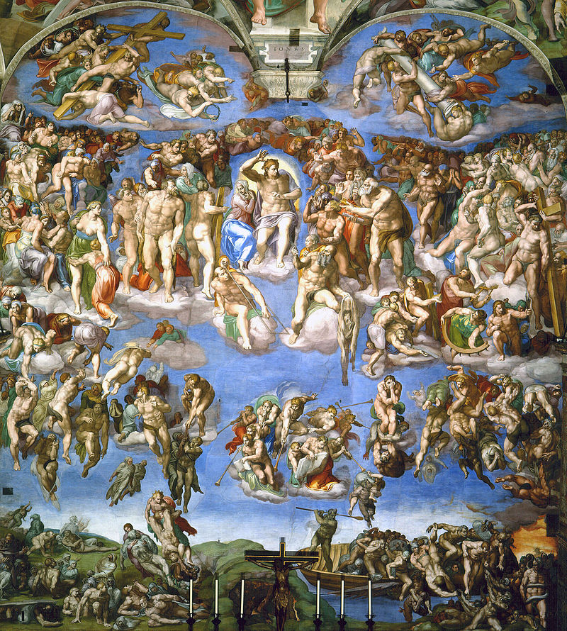

Principais Obras



.jpg)
O mestre que esculpiu o espírito do Renascimento e revelou a beleza divina através da arte.
Michelangelo di Lodovico Buonarroti Simoni (1475–1564) foi um dos maiores gênios da história da arte. Nascido em Caprese, Itália, ele demonstrou desde cedo um talento extraordinário para esculpir e desenhar, o que o levou a trabalhar com os maiores mecenas de sua época, incluindo os papas Júlio II e Leão X.
Escultor, pintor, arquiteto e poeta, Michelangelo acreditava que o artista era um instrumento divino capaz de revelar a perfeição escondida na matéria. Sua obra expressa tanto a força física quanto a espiritualidade humana, capturando a essência da alma com um realismo impressionante.
Michelangelo viveu no coração do Renascimento, um período de redescoberta dos valores da Antiguidade Clássica. Florença, Roma e Veneza fervilhavam com a energia criativa de artistas, cientistas e pensadores que buscavam unir fé, razão e beleza.
Em uma era marcada por transformações espirituais e intelectuais, Michelangelo foi a personificação da genialidade renascentista. Seu trabalho transcendia a arte — era uma forma de aproximar o homem do divino, representando corpos e emoções humanas com uma intensidade inédita.
O impacto de Michelangelo ecoa há mais de cinco séculos. Suas esculturas e pinturas redefiniram a relação entre arte e espiritualidade. Ele inspirou artistas como Bernini, Caravaggio e inúmeros outros que buscavam a mesma harmonia entre corpo e alma.
Hoje, Michelangelo é celebrado não apenas como um artista, mas como um símbolo da genialidade humana. Seu legado é uma lembrança eterna de que a beleza, quando guiada pela fé e pela paixão, pode tocar o divino.
Representando o herói bíblico, “David” simboliza a força, coragem e perfeição do corpo humano, sendo uma das esculturas mais admiradas do mundo.
Uma obra-prima em mármore, a “Pietà” captura a dor e serenidade de Maria ao segurar o corpo de Cristo, revelando o domínio técnico e emocional de Michelangelo.
Um dos painéis mais célebres da Capela Sistina, mostra o instante em que Deus concede vida a Adão, representando o vínculo entre o humano e o divino.
Um dos maiores feitos da história da arte, o teto da Capela Sistina narra a criação do mundo e a trajetória do homem sob o olhar divino.